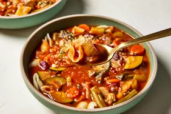

How to do a minestrone soup

Description
I made this homemade minestrone soup after becoming tired of the excess salt
and lack of veggies in canned ones. I based this recipe off of the delicious,
vegetable-rich minestrone served at Sheepherder's Inn in Sacramento, California.
Ingredients
- 3 tablespoons olive oil
- 3 cloves garlic, chopped
- 2 onions, chopped
- 5 carrots, sliced
- 4 cups tomato sauce
- 2 cups fresh or frozen green beans, cut into 1 ½-inch pieces
Directions
- Gather the ingredients.
- Heat olive oil in a large stockpot over medium-low heat. Sauté garlic in hot oil until fragrant,
2 to 3 minutes. Add onion; cook and stir until translucent, 4 to 5 minutes.
- Add celery and carrots; sauté for 1 to 2 minutes
- Pour in tomato sauce, broth, and water; bring to a boil, stirring frequently. Add red wine; reduce heat to low.
- Stir in zucchini, spinach, green beans, kidney beans, basil, oregano, salt, and pepper. Simmer until soup is heated through, 30 to 40 minutes.
- Meanwhile, fill a medium saucepan with water and bring to a boil. Cook seashell pasta in boiling water, stirring occasionally, until tender yet
firm to the bite, 7 to 8 minutes. Drain and set aside.
- Place 2 tablespoons cooked pasta into individual serving bowls. Ladle soup over pasta and sprinkle with Parmesan cheese.